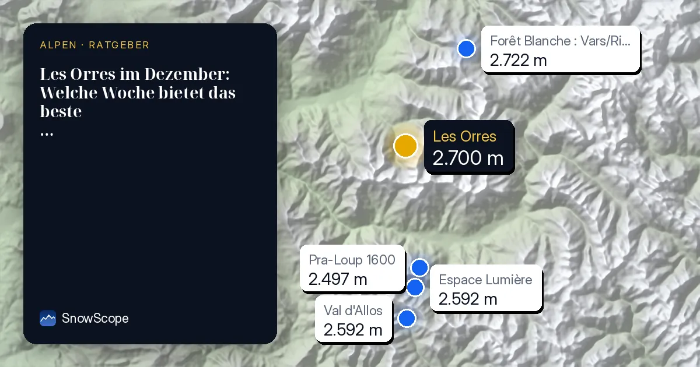

Les Orres im Dezember: Welche Woche bietet das beste Preis-Leistungs-Verhältnis?
Wenn du im Dezember 2026 in Les Orres skifahren willst, ohne die Hochsaisonpreise zu zahlen, bevor der Schnee an der Talstation zuverlässig ist, musst du den Ticketkalender mit unserer Schneehistorie abgleichen. Die richtige Woche bringt einen niedrigeren Preis und gute Schneechancen zusammen.
Die Live-Schneeprognose für Les Orres in der SnowScope-AppSchneehöhen, Pulverschnee-Alarme und 3D-Karte, gratis.
Wie sich der Preis im Dezember ändert
Die offizielle Website zeigt, dass sich die Preise für den 1-Tages-Skipass für Erwachsene im Laufe des Monats ändern. Vom 5. bis 11. Dezember 2026 liegt der Preis in der Nebensaison bei 34 EUR. In der Zwischensaison vom 12. bis 18. Dezember 2026 steigt der Preis auf 38,50 EUR. Sobald du ab dem 19. Dezember 2026 die Hochsaison erreichst, kostet der 1-Tages-Skipass für Erwachsene 45,50 EUR.
Diese schrittweisen Preisänderungen ermöglichen es dir, deinen Besuch zu planen. Du zahlst zu Monatsbeginn weniger, aber du musst vor der Buchung prüfen, ob die Schneehöhe deinen Erwartungen entspricht.

Dezember-Schnee in drei Höhenlagen
Unsere Schneehistorie aus 46 vergangenen Wintern zeigt deutliche Unterschiede zwischen dem Tal, der Mitte und dem Gipfel der Lifte. Am Fuß der Lifte auf 1.554 m liegt die übliche Dezember-Schneehöhe bei 23 cm, und die übliche Höhe am 15. Dezember beträgt 22 cm. Ein schneearmer Dezember bringt in 1 von 10 Wintern 3 cm oder weniger, während ein schneereicher Dezember 53 cm oder mehr bringt. Auf halber Höhe auf 2.127 m liegt die übliche Dezember-Schneehöhe bei 57 cm, mit 50 cm am 15. Dezember, und die Spanne zwischen schneearm und schneereich reicht von 19 cm bis 112 cm. Am Gipfel der Lifte auf 2.700 m erreicht die übliche Dezember-Schneehöhe 97 cm, mit 94 cm am 15. Dezember, und reicht von 41 cm in einem schneearmen Dezember bis zu 200 cm in einem schneereichen Dezember.
Das Tal kann anfangs schneearm bleiben. Der Anteil der Winter mit 30 cm oder mehr im Tal liegt vom 1. bis 7. Dezember bei nur 15 %, steigt vom 8. bis 14. Dezember auf 26 %, vom 15. bis 21. Dezember auf 41 % und vom 22. bis 28. Dezember auf 52 %. Auf halber Höhe liegt der Anteil der Winter mit 30 cm oder mehr vom 1. bis 7. Dezember bereits bei 61 %, vom 8. bis 14. Dezember bei 78 % und erreicht vom 15. bis 21. Dezember 87 % sowie vom 22. bis 28. Dezember 89 %. Am Gipfel liegt der Anteil vom 1. bis 7. Dezember bei 87 % und steigt vom 15. bis 28. Dezember auf 96 %.
Aktuell zeigen die Schneezahlen für den 13. November 2026 0 cm am Fuß der Lifte mit 2 cm Neuschnee, die in den nächsten 7 Tagen erwartet werden. Auf halber Höhe liegen 1 cm mit 29 cm erwartetem Neuschnee, und am Gipfel liegen 10 cm mit 40 cm erwartetem Neuschnee. Die zweiwöchige Neuschneeprognose vom 13. November 2026 bis 26. November 2026 für die mittlere Höhe und darüber deutet auf einen Mittelwert von 67 cm in einer Spanne von 55 bis 80 cm hin.
Die Woche, in der Preis und Schnee zusammenpassen
Legst du beide Kalender nebeneinander, passt die Nebensaison-Woche vom 12. bis 18. Dezember 2026 am besten. Der 1-Tages-Pass für Erwachsene kostet dann 38,50 EUR statt 45,50 EUR ab dem 19. Dezember, und die Schneechancen sind viel besser als in den ersten Tagen.
An der Mittelstation lagen in 78 % der vergangenen Winter vom 8. bis 14. Dezember 30 cm oder mehr, vom 15. bis 21. Dezember in 87 %; am Gipfel waren es in der zweiten Monatshälfte 96 %. Du fährst oben also auf solidem Schnee und zahlst trotzdem den Nebensaison-Preis, bevor die Weihnachtspreise kommen.
Im Vergleich zu Vars-Risoul
Es hilft, Les Orres mit dem nahegelegenen Vars-Risoul zu vergleichen, um zu sehen, wie die Zahlen abschneiden. Vars-Risoul bietet ein größeres kartiertes Skigebiet mit 131 km Pisten und 38 Liften, verglichen mit dem Skigebiet von Les Orres mit 54 km Pisten und 21 Liften. Der Höhenunterschied ist ähnlich, wobei Vars-Risoul von 1.632 m bis 2.722 m reicht und Les Orres von 1.554 m bis 2.700 m.
In Bezug auf den Schnee zeigt Vars-Risoul eine übliche Dezember-Schneehöhe von 33 cm an der Basis (1.632 m), 51 cm auf halber Höhe (2.177 m) und 77 cm am Gipfel (2.722 m). Die übliche Höhe am 15. Dezember beträgt 32 cm an der Basis, 48 cm auf halber Höhe und 76 cm am Gipfel. Bei der Preisgestaltung listet Vars-Risoul einen 1-Tages-Pass für Erwachsene (Forêt Blanche) für den Winter 2026-27 für 58 EUR und einen 6-Tages-Pass für Erwachsene für 298 EUR. Les Orres bietet dir flexiblere tägliche Preisstufen ab 34 EUR in der Nebensaison, was es zu einer kostengünstigeren Wahl macht, wenn du die richtigen Wochen anpeilst.
Was sich seit den 1980er Jahren geändert hat
Wenn wir auf unsere 46 vergangenen Winter zurückblicken, zeigen die Dezember-Durchschnitte eine positive Verschiebung der Schneehöhe in höheren Lagen. Wenn wir die ersten 15 Winter (1980-81 bis 1994-95) mit den letzten 15 Wintern (2011-12 bis 2025-26) vergleichen, erzählen die Zahlen eine interessante Geschichte. Auf halber Höhe lag der Dezember-Durchschnitt in den ersten 15 Wintern bei 44 cm und stieg in den letzten 15 Wintern auf 58 cm. Am Gipfel der Lifte lag der Dezember-Durchschnitt in den ersten 15 Wintern bei 76 cm und stieg in den letzten 15 Wintern auf 101 cm.
Am Fuß der Lifte bewegte sich der Dezember-Durchschnitt von 21 cm in den ersten 15 Wintern auf 24 cm in den letzten 15 Wintern. Der schneearmste Dezember, der auf halber Höhe aufgezeichnet wurde, lag bei 2 cm in der Saison 2015-16, während der schneereichste Dezember auf halber Höhe in der Saison 1996-97 128 cm erreichte. Im letzten Winter, der Saison 2025-26, gab es einen Dezember-Durchschnitt von 19 cm im Tal, 42 cm auf halber Höhe und 72 cm am Gipfel.
Tipps für Skifahrer
- Buche deinen Skipass auf der offiziellen Website für die Woche vom 12. bis 18. Dezember 2026, um dir den Zwischensaisonpreis von 38,50 EUR zu sichern, bevor die Hochsaisonpreise am 19. Dezember beginnen.
- Konzentriere dein Skifahren im Dezember auf die mittlere Höhe (2.127 m) und den Gipfel (2.700 m), wo der Anteil der Winter mit 30 cm oder mehr Mitte des Monats bei 87 % bis 96 % liegt.
- Prüfe den lokalen Lawinenlagebericht, bevor du abseits der Pisten fährst, besonders wenn die Neuschneemengen aus der Prognose die Schneehöhe in den oberen Lagen erhöhen.
- Erwarte anfangs eine dünne Schneedecke an der Basis (1.554 m), wo die übliche Dezember-Schneehöhe nur 23 cm beträgt und der Anteil der Winter mit 30 cm oder mehr vom 1. bis 7. Dezember nur 15 % beträgt.
Weitere Karten (externe Seiten)
Quellen und Nachweise
- Les Orres, official ski pass prices 2026-27 www.lesorres.com/forfaits-de-ski
- Risoul, official ski pass page, Forêt Blanche 2026-27 risoul.labellemontagne.com/fr/hiver/forfaits/risoul-foret-blanche/
- Risoul, official 6-day Forêt Blanche pass page 2026-27 risoul.labellemontagne.com/fr/hiver/forfaits/6-jours-foret-blanche/
- SnowScope, December snow at three heights and today's snow map snowscope.app/
Zu diesen Zahlen
Schneewerte: SnowScope-Schneehistorie, 46 vergangene Winter (1980-81 bis 2025-26) auf drei Höhen jedes Skigebiets (ein höhenkorrigiertes Modell der Vergangenheit: eine Schätzung für eine Fläche, keine Messungen des Skigebiets); Dezemberwerte aus den täglichen Schneehöhen dieser Winter. Aktueller Schnee und Zwei-Wochen-Ausblick: SnowScope-Prognosen (Ausblick aus ECMWF und GFS, eine Spanne, kein Versprechen). Lifte und Pisten: OpenSkiMap-Kartierung. Preise: die offiziellen Seiten unten, gelesen am 2026-11-13; Preise können sich ändern, vor der Buchung prüfen.
Offizielle Lawinenlageberichte: Météo-France – Bulletin d'estimation du risque d'avalanche
Diesen Bericht zitieren
Für Forschung, Lehre oder Presse: Zahlen und Grafiken sind unter CC BY 4.0 mit dieser Quellenangabe frei nutzbar.
SnowScope (2026), Les Orres im Dezember: Welche Woche bietet das beste Preis-Leistungs-Verhältnis?, https://snowscope.app/blog/de/2026/11/les-orres-december-ski-week-by-week-prices-2026.html, abgerufen am 2026-11-14
SnowScope (Atlas Labs). (2026, November 14). Les Orres im Dezember: Welche Woche bietet das beste Preis-Leistungs-Verhältnis?. SnowScope snow reports. https://snowscope.app/blog/de/2026/11/les-orres-december-ski-week-by-week-prices-2026.html
BibTeX
@misc{snowscope2026lesorresdecemberskiweekb,
author = {{SnowScope (Atlas Labs)}},
title = {Les Orres im Dezember: Welche Woche bietet das beste Preis-Leistungs-Verhältnis?},
year = {2026},
month = nov,
howpublished = {\url{https://snowscope.app/blog/de/2026/11/les-orres-december-ski-week-by-week-prices-2026.html}},
note = {Published 2026-11-14 15:51 UTC; accessed 2026-11-14}
}· CC BY 4.0 · Methoden, Daten und Werkzeuge →
Les Orres: Schnee und Temperatur nach Höhe, dieser Winter vs letzter (Werkzeuge) →
Les Orres folgen
Gratis: eine Nachricht, wenn Neuschnee kommt, und jeden Morgen die Vorhersage.
Weitere Schneeberichte

In 24 von 46 Wintern hatten die Skigebiete auf der italienischen und südfranzösischen Seite der Alpen einen relativ stärkeren Winter als die Nordseite. Die Grafik, die großen Jahre und das Wetter dahinter.

Ein günstiger 3-Tage-Plan am Comer See im Dezember mit echten Preisen 2026-27: Züge, Schiffe, Standseilbahn und ein Skitag in Piani di Bobbio oder Madesimo, die Ersparnis gegenüber Cortina und die Chance auf Schnee zu Weihnachten.